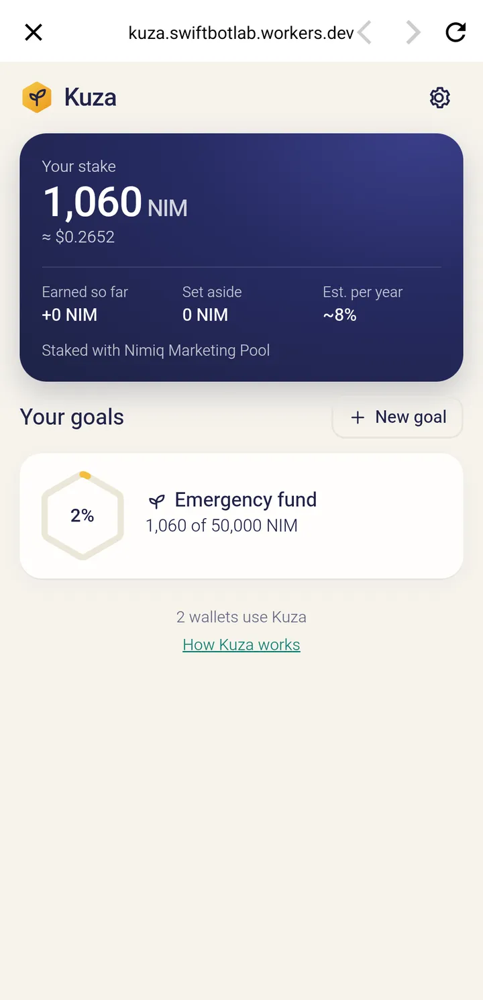
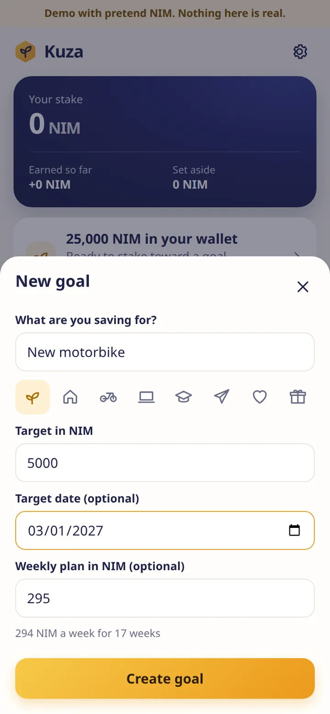
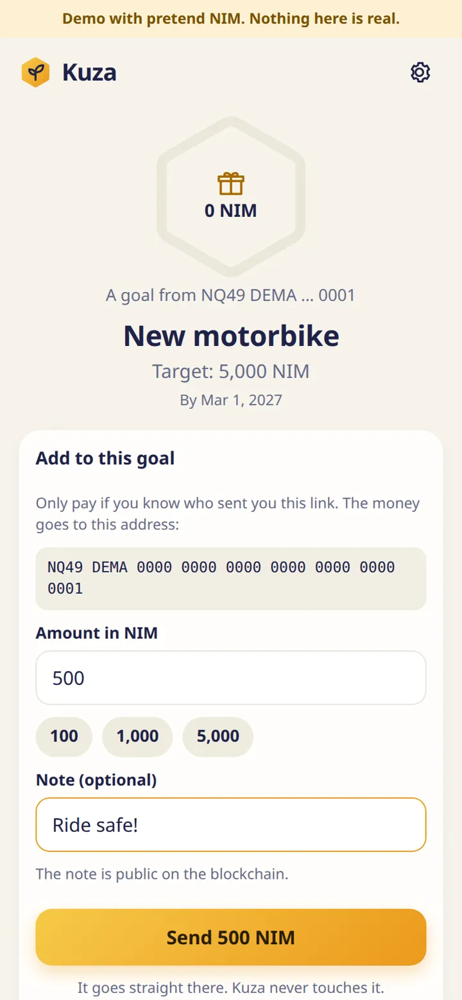
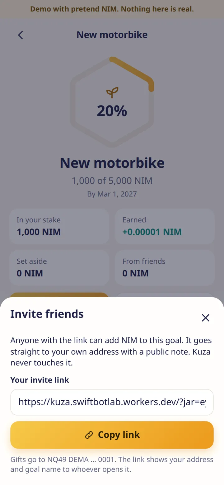

Savings goals that grow in your own NIM stake
Inside Nimiq Pay, set a goal and stake toward it with a validator pool, so your savings earn while they wait. Friends can chip in with a link. Kuza never holds your NIM: you approve every move in Nimiq Pay.
Or in Nimiq Pay, go to Mini Apps and enter kuza.swiftbotlab.workers.dev
- Non-custodial
- No lock-up
- English, Spanish, French, Swahili

New motorbike
1,850 of 5,000 NIM
in your own stake
- Staked+1,000
- Weekly top-up+350
- A friend: “Ride safe!”+500
- 7
- mainnet transactions, from the first stake to NIM back in the wallet
- 1,100 NIM
- in our test stake after the full cycle, active with a pool
- 12–24 h
- the network’s cooling-off when you take NIM out
- 0 NIM
- held by Kuza. Money only moves through Nimiq Pay’s approval sheets
How it works
A goal, a stake, and friends who can chip in
Everything happens inside the Nimiq Pay wallet. There is no account to make.
-

Demo01Set a goal
A name, a target, a date and a weekly plan. Kuza suggests the weekly amount and the first saving from what is in your wallet.
-
 Real, mainnet02
Real, mainnet02Stake toward it
Each saving is a staking transaction you approve, with a validator pool you choose. Under the network’s 100 NIM minimum for a new stake, the goal fills in your wallet instead and tells you how far you are from being able to stake.
-

Demo03Friends chip in
Share an invite link. A friend pays your own address directly, with a note in the transaction, and Kuza counts it toward the goal.
Mainnet record
The whole cycle, with real NIM, including the way out
Run in the real Nimiq Pay app on two Android phones, with real NIM. Each transaction was read back from the chain, last checked on 4 November 2026.
-
1
New stake, 1,000 NIMCreate staker · SaveBlock 65,870,4302 Nov 22:34 UTC
-
2
Top-up, 60 NIMAdd stake · SaveBlock 65,870,5092 Nov 22:35 UTC
-
3
Stop earning on the 60 NIM (start of the cooling-off)Set active stake · Take outBlock 65,870,7062 Nov 22:38 UTC
-
4
A friend’s gift from a second phone, 100 NIM with the note “Good luck with the fund”Transfer with a note · Group jarBlock 65,872,3722 Nov 23:06 UTC
-
5
The gift moved into the stake, 100 NIMAdd stake · Group jarBlock 65,872,6122 Nov 23:10 UTC
-
6
Retire the released 60 NIM, after the cooling-offRetire stake · Take outBlock 65,924,3173 Nov 13:28 UTC
-
7
Remove: the 60 NIM back to the walletRemove stake · Take outBlock 65,924,3373 Nov 13:28 UTC
That is the whole cycle, including the way out. Kuza had worked out the release at block 65,923,200 and the retire went through at 65,924,317. The stake now holds 1,100 NIM, active with a pool.
Why your own stake
Your NIM never leaves your hands
Kuza is a set of goals on top of your own stake. It holds nothing and sends nothing by itself.
You approve every move
Every saving, top-up and withdrawal is a transaction you approve in Nimiq Pay’s own sheet. The stake belongs to your wallet, with the pool you picked.
Never locked
Staking isn’t a lock. You can start taking NIM out at any time, and the network’s cooling-off takes about 12 to 24 hours. Kuza shows the real steps and the real wait, with live block numbers.
Goals stay on your phone
Goals, streaks and notes are kept on your phone. To show a public count of wallets, Kuza sends a hash of your address once, and you can switch that off in settings.
The Nimiq provider can’t create vesting contracts, so an enforced time lock isn’t possible from a Mini App. Kuza’s goals work through the cooling-off and your own plan, not through force.


The group jar
Friends add to the goal, straight to your address
A birthday, a trip, a family fund. Send the invite link and anyone with it can add NIM to the goal.
One link, no account
The gift goes straight to your own address with a public note in the transaction. Kuza never touches it.
Counted from the chain
Kuza reads the note on-chain and counts the gift toward the goal. Moving it into your stake is one more transaction you approve.
6a449594631de6e0…26c3179f6336b50View on nimiq.watch
Plainly
Honest limits
- So far it has been used with our own test wallets. We know of no outside user yet.
- Tested on Android only, on two real phones. Not yet tested on an iPhone.
- Rewards: Earned still shows +0. The pool adds rewards to the stake only once they reach 1 NIM, and this stake hasn’t reached that yet.
- Staking isn’t a lock. You can start taking NIM out at any time, and the network’s cooling-off takes about 12 to 24 hours.
FAQ
Questions
Does Kuza ever hold my NIM?
No. Your NIM goes into your own stake with a validator pool, and every move is a transaction you approve in Nimiq Pay. Gifts from friends go straight to your own address.
Can I take my NIM out before I reach the goal?
Yes, at any time. Taking NIM out is three steps: stop earning, the network’s cooling-off of about 12 to 24 hours, then two approvals back to your wallet. If the pool’s validator is jailed, the stake can’t leave until the jail ends, which can add several days.
What if I have less than 100 NIM?
The network asks for at least 100 NIM to start a stake. Below that, the goal fills in your wallet instead and tells you how far you are from being able to stake.
What does it earn?
Your stake earns the pool’s staking rewards. Reward figures are estimates and they change, and the app labels them that way.
Where are my goals stored?
On your phone. Your stake and what it earned are read from the chain. To show a public count of wallets, Kuza sends a hash of your address once, and you can switch that off in settings.
How do I open it?
In Nimiq Pay, go to Mini Apps and enter kuza.swiftbotlab.workers.dev, or open nimiqpay://miniapp?url=https%3A%2F%2Fkuza.swiftbotlab.workers.dev%2F on a phone with Nimiq Pay installed. In a normal browser you can try the demo with pretend NIM. It follows the language set in Nimiq Pay: English, Spanish, French or Swahili.
Start a goal in Nimiq Pay
Open Mini Apps and enter kuza.swiftbotlab.workers.dev, or try it here first with pretend NIM.